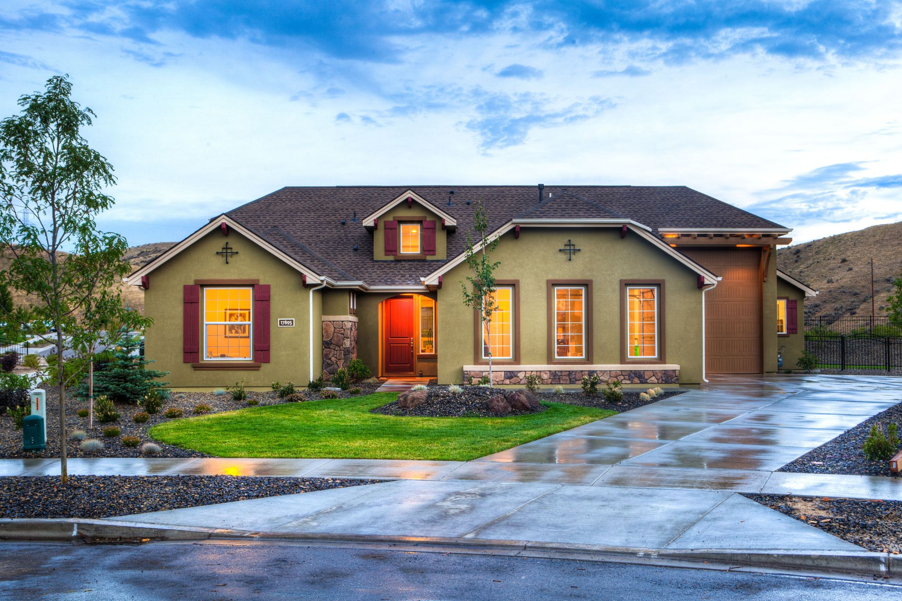
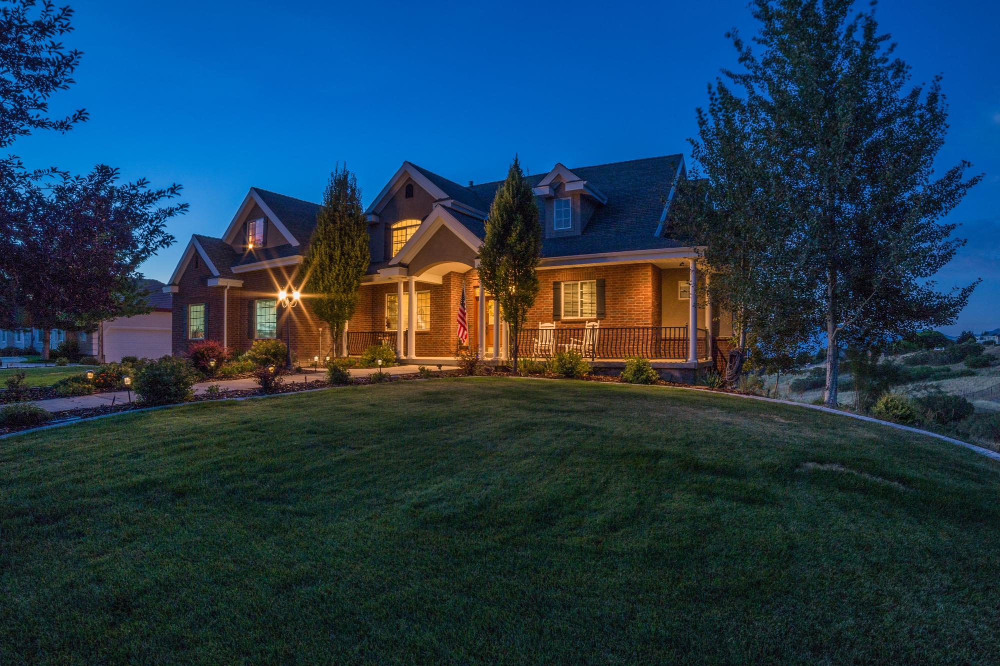

Most buyers
Conventional
Flexible and widely available, best with solid credit and steady income. Some programs start at 3 percent down.
Mortgage & Financing
Loan types, pre-approval and the Texas programs that help with a down payment, from a broker who is also a licensed loan originator.
Why financing comes first
Financing is where most purchases stall, and it is the part people understand least. Robert LeBorne holds a mortgage loan originator license (NMLS 2005075) alongside his broker's license, so he reads a loan file the way an underwriter does and tells you plainly what has to happen next.
His mortgage work reaches buyers in Austin and Houston as well as San Antonio and Boerne. When you are ready to look, the Buyer's Guide picks up from pre-approval.
Loan types
Six ways most San Antonio buyers finance a home. Robert will tell you which ones you qualify for.
Most buyers
Flexible and widely available, best with solid credit and steady income. Some programs start at 3 percent down.
First-time buyers
As little as 3.5 percent down, with more room on credit scores than most conventional loans.

Veterans
For veterans and service members: no down payment for eligible buyers and no private mortgage insurance.
Rural homes
For eligible homes outside the city centers, often with no down payment at all.
Investors
DSCR, hard money and other loans for rentals, flips and distressed property.
See investment property

Texas help
Down payment assistance through the Texas Homebuyer Program and TSAHC, and Veterans Land Board loans for Texas veterans.
Read the Buyer's Guide
Run the numbers
Estimate a monthly payment from price, down payment, rate and term. Taxes and insurance change the total, so treat it as a starting point.
<!-- IDX_ZONE: mortgage-calculator -->
AgenticPress mortgage calculator plugin. Builder places the shortcode here.
Pre-approval
A pre-approval sets your budget, strengthens your offer and speeds up closing, because much of the paperwork is already done.
Bring these to the first conversation:
Questions
Twenty percent is common but not required. Many programs ask for less, and some buyers qualify with 0 to 3.5 percent down.
A fixed rate keeps the payment steady; an adjustable rate may start lower. The right choice depends on how long you plan to stay.
Often, yes. Lenders offer programs across a range of credit scores, and Robert can point you toward the ones that fit.
Pre-approvals expire, usually after a few months. If your search runs longer, the lender refreshes it with updated documents.
With financing, yes. Robert's mortgage work reaches Austin and Houston; for the purchase itself, he works in San Antonio and Boerne.
Resources
Next step
A short call about income, savings and timing is enough to start. Robert will tell you which loan fits and what to gather.